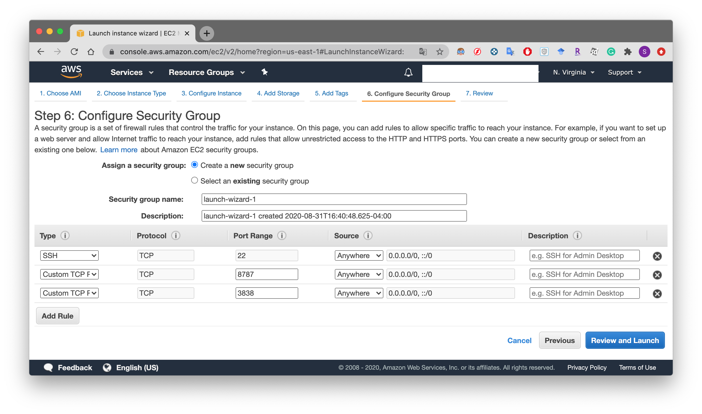

<!DOCTYPE html>
<html lang="en-US">

<head>
    <meta charset="utf-8">
    <meta http-equiv="X-UA-Compatible" content="chrome=1">
    <meta name="HandheldFriendly" content="True">
    <meta name="MobileOptimized" content="320">
    <meta name="viewport" content="width=device-width, initial-scale=1.0">
    <meta name="referrer" content="no-referrer">
    
    <meta name="description" content="Shangchen Song&#39;s personal website">
    
    <meta name="twitter:card" content="summary">
    <meta name="twitter:domain" content="https://Shangchen.org/">
    
    <meta name="twitter:image" content="https://shangchen.org/twitter-card.jpg">
    <meta name="twitter:title" property="og:title" itemprop="title name" content="Shangchen Song">
    <meta name="twitter:description" property="og:description" itemprop="description" content="Shangchen&#39;s personal website">
    <meta name="og:type" content="website">
    <meta name="og:url" content="https://shangchen.org/">
    <meta name="og:image" itemprop="image primaryImageOfPage" content="https://shangchen.org/twitter-card.jpg">
    
    <title>Article</title>
    <link rel="shortcut icon" href="../noodle.ico" id="favicon">
    <link rel="stylesheet" href="../../css/style.css">
    
    <link rel="stylesheet" href="https://fonts.googleapis.com/css?family=Didact+Gothic">
    
    <script src="https://code.jquery.com/jquery-3.2.1.min.js" integrity="sha256-hwg4gsxgFZhOsEEamdOYGBf13FyQuiTwlAQgxVSNgt4="
        crossorigin="anonymous"></script>
    
    
    <script async src="https://www.googletagmanager.com/gtag/js?id=UA-122469780-1"></script>
    <script>
        window.dataLayer = window.dataLayer || [];
        function gtag() { dataLayer.push(arguments); }
        gtag('js', new Date());

        gtag('config', 'UA-122469780-1');
    </script>
    

    
    <link rel="stylesheet" href="https://use.fontawesome.com/releases/v5.1.1/css/all.css" integrity="sha384-O8whS3fhG2OnA5Kas0Y9l3cfpmYjapjI0E4theH4iuMD+pLhbf6JI0jIMfYcK3yZ" crossorigin="anonymous">

</head>

</html>
<body><div class="wrap"><div class="section" id="title">Article</div><div class="section" id="content">

<h1>Deploy an RStudio Server on AWS</h1>


  <div class="article-container">

    <div class="article-style">
      <p>RStudio Server lets users be able to access RStudio anywhere only if they have a web browser. It makes remote cooperation more easily, especially in this COVID pandemic. And, AWS is a powerful cloud computing platform which has various plans for data scientists to choose.</p>
<h1 id="set-up-an-aws-instance">Set up an AWS instance</h1>
<ol>
<li>We need to launch an AWS instance first. Select <strong>Launch a virtual machine</strong>.</li>
</ol>
<p></p>
<ol start="2">
<li>Choose your desired VM system. Here I select Ubuntu 20 to obtain the newest R (4.0.2).</li>
</ol>
<p></p>
<ol start="3">
<li>Choose your desired VM specs. You can use free-trial one or high-performance one.</li>
</ol>
<p></p>
<ol start="4">
<li>
<p>Click the <strong>Next: Configue Instance Details</strong>.</p>
</li>
<li>
<p>Click the <strong>Create new IAM role</strong>. Create an IAM role as <em>rstudio</em> by the following JSON code. Then select the <em>rstudio</em> at the IAM role. Click the <strong>Next: Add Storage</strong>.</p>
</li>
</ol>
<pre><code class="language-JSON">{
  &quot;Version&quot;: &quot;2012-10-17&quot;,
  &quot;Statement&quot;: [
    {
      &quot;Effect&quot;: &quot;Allow&quot;,
      &quot;Action&quot;: [&quot;s3:ListBucket&quot;],
      &quot;Resource&quot;: [&quot;arn:aws:s3:::rstatsdata&quot;]
    },
    {
      &quot;Effect&quot;: &quot;Allow&quot;,
      &quot;Action&quot;: [
        &quot;s3:PutObject&quot;,
        &quot;s3:GetObject&quot;,
        &quot;s3:DeleteObject&quot;
      ],
      &quot;Resource&quot;: [&quot;arn:aws:s3:::rstatsdata/*&quot;]
    }
  ]
}
</code></pre>
<ol start="6">
<li>
<p>Click the <strong>Next: Add Tags</strong>.</p>
</li>
<li>
<p>Click the <strong>Configure Security Group</strong>.</p>
</li>
<li>
<p>Configure the settings as the Screenshot.</p>
</li>
</ol>
<p></p>
<ol start="9">
<li>
<p>Click the <strong>Review and Launch</strong> and <strong>View Instance</strong>. It might ask user to save the SSH key. Please save it at a save place. We will use it later.</p>
</li>
<li>
<p>Now you can access the instance in the <strong>Running Instances</strong> tab.</p>
</li>
</ol>
<p></p>
<h1 id="connect-to-the-instance">Connect to the instance</h1>
<ol>
<li>Open your terminal and cd to the folder you saved the SSH key. Type</li>
</ol>
<pre><code class="language-Bash">ssh -i SSHkey.pem ubuntu@yourpublicDNSoftheInstance
</code></pre>
<ul>
<li>type yes when you are asked <code>Are you sure you want to continue connecting (yes/no/[fingerprint])?</code></li>
</ul>
<h1 id="install-r">Install R</h1>
<ol>
<li>I got reference from 
<a href="https://linuxize.com/post/how-to-install-r-on-ubuntu-20-04/" target="_blank" rel="noopener">How to Install R on Ubuntu 20.04
</a></li>
</ol>
<pre><code class="language-Bash">sudo apt install dirmngr gnupg apt-transport-https ca-certificates software-properties-common

sudo apt-key adv --keyserver keyserver.ubuntu.com --recv-keys E298A3A825C0D65DFD57CBB651716619E084DAB9

sudo add-apt-repository 'deb https://cloud.r-project.org/bin/linux/ubuntu focal-cran40/'

sudo apt install r-base
</code></pre>
<ol start="2">
<li>Check the R version</li>
</ol>
<pre><code class="language-bash">R --version # R version 4.0.2 (2020-06-22) -- &quot;Taking Off Again&quot;
</code></pre>
<h1 id="install-rstudio-server">Install RStudio Server</h1>
<ol>
<li>Just as the 
<a href="https://rstudio.com/products/rstudio/download-server/debian-ubuntu/" target="_blank" rel="noopener">RStudio Server Webpage</a>, type in terminal:</li>
</ol>
<pre><code class="language-bash">sudo apt-get install gdebi-core
wget https://download2.rstudio.org/server/bionic/amd64/rstudio-server-1.3.1073-amd64.deb
sudo gdebi rstudio-server-1.3.1073-amd64.deb
</code></pre>
<h1 id="create-login-user">Create Login User</h1>
<ol>
<li>To set up a new user, you can do</li>
</ol>
<pre><code class="language-bash">sudo useradd username
sudo passwd username
</code></pre>
<ol start="2">
<li><strong>IMPORTANT</strong>: we need to create the corresponding folder under the /home path.</li>
</ol>
<pre><code class="language-bash">sudo mkdir /home/username
sudo chown -R username username
</code></pre>
<h2 id="launch-the-rstudio-server">Launch the RStudio Server</h2>
<ol>
<li>
<p>Find the <strong>IPv4 Public IP</strong> in the instance information.</p>
</li>
<li>
<p>Open a web browser and type in the <strong>IPv4address:8787</strong>.</p>
</li>
<li>
<p>Enter the username and password you created just now.</p>
</li>
<li>
<p>The RStudio Server should work now.</p>
</li>
</ol>
<p></p>
<h1 id="some-errors">Some Errors</h1>
<ol>
<li>When you install package <code>tidyverse</code>, you may meet the following error:</li>
</ol>
<pre><code class="language-R">ERROR: dependencies ‘httr’, ‘rvest’, ‘xml2’ are not available for package ‘tidyverse’
* removing ‘/home/ssc/R/x86_64-pc-linux-gnu-library/4.0/tidyverse’
Warning in install.packages :
  installation of package ‘tidyverse’ had non-zero exit status

The downloaded source packages are in
    ‘/tmp/RtmpicB0nC/downloaded_packages’
</code></pre>
<ul>
<li>Solution: Type this in your terminal</li>
</ul>
<pre><code class="language-bash">sudo apt-get install -y libxml2-dev libcurl4-openssl-dev libssl-dev
</code></pre>
<ol start="2">
<li>When install package <code>xlsx</code>, you need Java and rJava installed.</li>
</ol>
<ul>
<li>Solution: I got reference from 
<a href="https://github.com/hannarud/r-best-practices/wiki/Installing-RJava-%28Ubuntu%29" target="_blank" rel="noopener">hannarud</a>
<ul>
<li>check the Java status <code>java -version</code></li>
<li>if it shows there is no java command then run these commands:</li>
</ul>
<pre><code>sudo apt-get install default-jre
sudo apt-get install default-jdk
</code></pre>
<ul>
<li>Then make the R and Java associated</li>
</ul>
<pre><code>sudo R CMD javareconf
</code></pre>
<ul>
<li>Install RJava</li>
</ul>
<pre><code class="language-bash">sudo add-apt-repository ppa:marutter/c2d4u3.5
sudo apt-get update
sudo apt-get install r-cran-rjava
sudo apt-get install libgdal-dev libproj-dev
</code></pre>
</li>
</ul>

    </div>

</div><div class="section bottom-menu"><hr/><p>


<a href="/about">shangchen song</a>

&#183; <a href="/sofeware">software</a>
&#183; <a href="/article">article</a>
&#183; <a href="/cv">cv</a>

&#183; <a href="https://shangchen.org/">main</a></p></div><div class="section footer"></div></div></body>